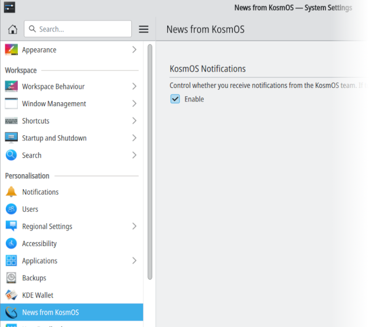

apt search indi-SOMETHING(where SOMETHING is, for example, your camera vendor), and then install it with:
sudo apt install PACKAGEOr, you can:
sudo apt install indi-3rdparty-allTo see which driver packages are included, type:
apt info indi-3rdparty-alland read the package description.
KosmOSamb@You can (and should) change it opening a terminal and typing:
smbpasswdYou can of course use the same password you use for login, if you wish.
KosmOS comes with a notification system that receives and displays (when you log in) important events from the KosmOS Team, such as important software updates, major bugs or security warnings. Notifications will popup as non-intrusive desktop notifications (as you can see in the image). Please note that every event will be shown more than once (every time you login to the system) inside its validity period, unless you press the Do not show again button of the notification itself.
If you don't want to receive any notification from KosmOS, you can entirely disable the system by launching System Settings and selecting News from Kosmos inside the Personalization panel.
KWallet is the KDE subsystem that stores and encripts your personal passwords, keeping them safe. Since KosmOS is configured by default to autologin your user, KWallet can't be opened automatically at login, causing wallet password to be requested at some program first start. To avoid this annoying behaviour, KWallet is disabled by default: if you use it for astronomy production and don't need to store passwords, this will not create any problem. Otherwise, it's advisable to enable and configure it: you can do it in System Settings, and use the KDE and KWallet help if needed.